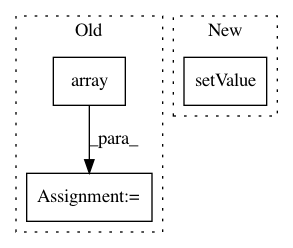

da09a6e992ff6dad66b81ef01e1a209867edcf6b,lazyflow/operators/opResize.py,OpResize,setupOutputs,#OpResize#,16
Before Change
self.Output.meta.assignFrom( self.Input.meta )
self.Output.meta.shape = output_shape
self._input_to_output_scales = numpy.array( output_shape, dtype=numpy.float32 ) / input_shape
axes = self.Input.meta.getAxisKeys()
if "t" in axes:
assert self._input_to_output_scales[ axes.index("t") ] == 1.0, \
After Change
def setupOutputs(self):
axes = self.Input.meta.getAxisKeys()
self._op5_out.AxisOrder.setValue( "".join( axes ) )
// Reorder the shape for 5D
orig_shape = self.ResizedShape.value
tagged_shape = collections.OrderedDict( zip( self.Input.meta.getAxisKeys(), orig_shape ) )
In pattern: SUPERPATTERN
Frequency: 3
Non-data size: 3
Instances
Project Name: ilastik/ilastik
Commit Name: da09a6e992ff6dad66b81ef01e1a209867edcf6b
Time: 2014-04-28
Author: bergs@janelia.hhmi.org
File Name: lazyflow/operators/opResize.py
Class Name: OpResize
Method Name: setupOutputs
Project Name: ilastik/ilastik
Commit Name: 6fe60e43efbac200052a76b0a849c4c7cd4654a5
Time: 2018-04-25
Author: jonas.massa@iwr.uni-heidelberg.de
File Name: ilastik/applets/networkClassification/nnClassGui.py
Class Name: NNClassGui
Method Name: pred_nn
Project Name: ilastik/ilastik
Commit Name: f90df8b02e58f18a5a726bbe939a586dbcd55f58
Time: 2013-02-26
Author: bergs@janelia.hhmi.org
File Name: workflows/objectClassification/objectClassificationWorkflowMainGui.py
Class Name:
Method Name: debug_with_new